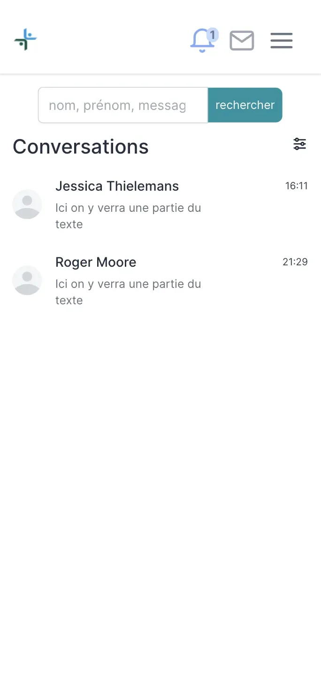

Listing page
My first redesign on the project: the long column of links to cities moves to the bottom of the page, and the listings take up all the space. Here, the Loire-Atlantique department.
Gradual redesign of the frontend of a pharmacy marketplace: pharmacies for sale, job offers and content for pharmacists.


Ouipharma is a listings platform for pharmacists: users can sell or buy a pharmacy, find a business partner, and post or browse job offers.
I joined Ouipharma in March 2021, on a site that had been online for several years. At first, I worked with another developer. Then I handled the frontend on my own, with help on the back-end when needed.
My role: redesign the interfaces page by page, adapt them to mobile, and integrate the interfaces of the user area. I also made design proposals, and worked with the CEO on SEO.
At the same time, we replaced the old CSS libraries (Semantic UI, then Bootstrap) with Tailwind.css.
Listings
Home and navigation
Content
User area
CSS code
Click a screenshot to enlarge it.
My first redesign on the project: the long column of links to cities moves to the bottom of the page, and the listings take up all the space. Here, the Loire-Atlantique department.
New layout: key information at the top, the sign-up form on the right, and a reworked mobile version.
Articles are now shown in a grid, with the author, date and reading time. On the article page: a more airy layout, share buttons and an “All other articles” carousel, built with Glide.js.
New subscription plans page, organized by need: selling a pharmacy, finding staff, partnering or investing.
The home page changed in two steps: the previous team added the search tabs in 2020, then I redesigned the search filter, the listing cards, the buttons and the mobile version in 2022.
Example: the messaging page, from design proposal to integration, on desktop and mobile.


At first, I made light changes, so that the redesigned pages stayed consistent with the ones that had not been redesigned yet.
In the end, over two years, almost all the pages were redesigned. They stayed consistent, but without a shared reference, it was hard to check: not forgetting anything, and avoiding small differences from one page to another.
Looking back, I would start from mockups or a design system for the whole site. That would have made these checks simpler, and allowed me to make bolder visual choices.
Screenshots taken on local copies of the site, with fictional listings and contacts. The years show the state of the site at that time: some visible elements were added by other team members.